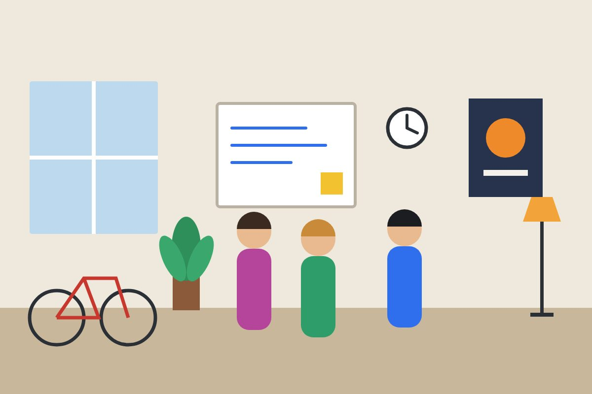
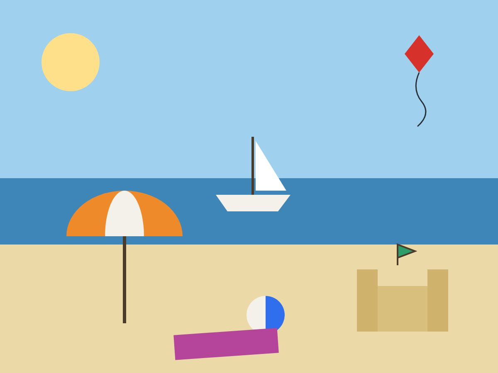
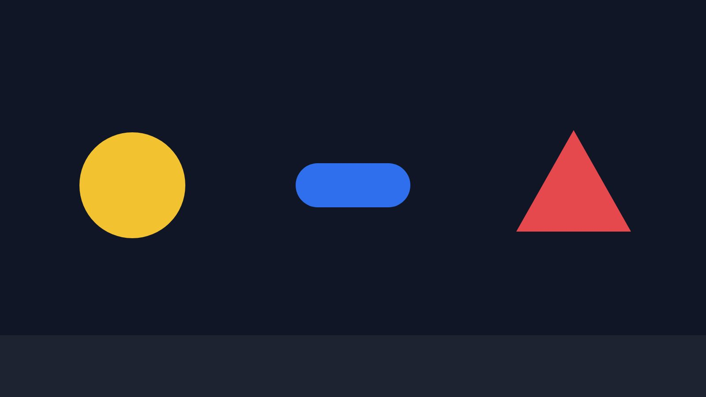
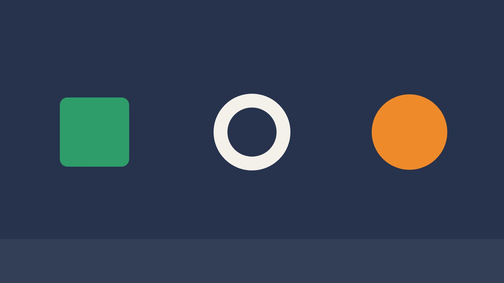
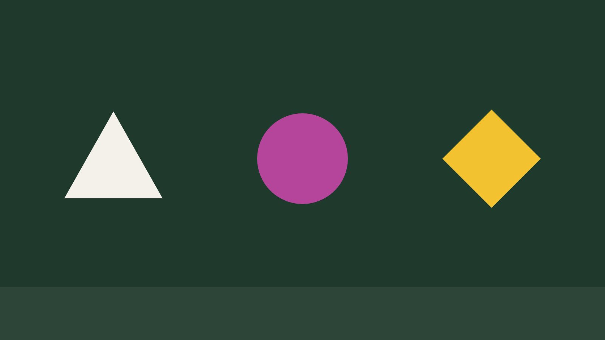
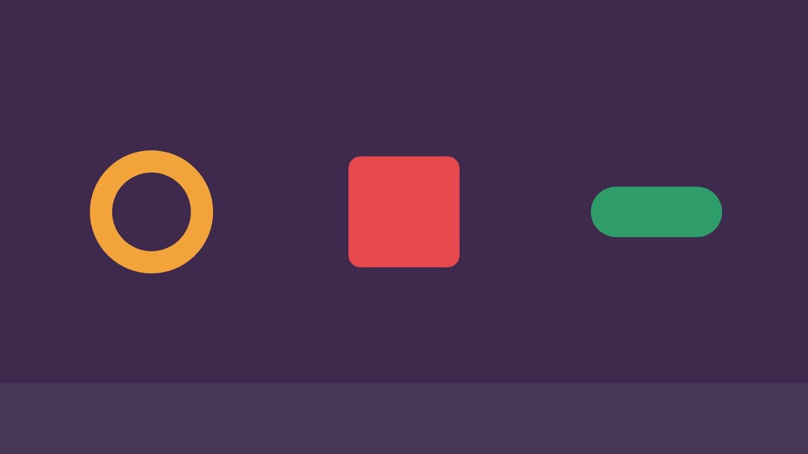
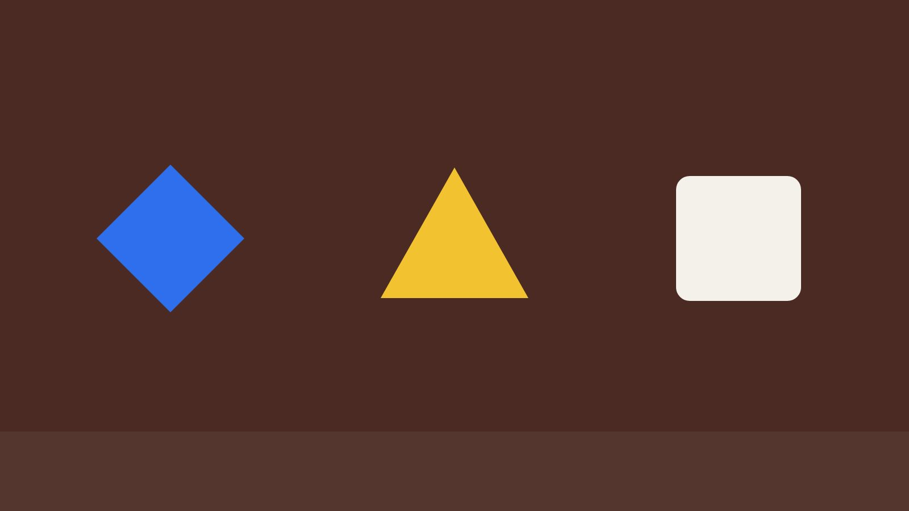
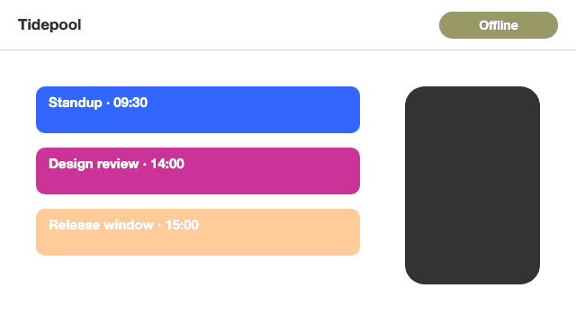
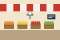

Eleven people and one harbour
We build Tidepool from the third floor of an old warehouse in Hamburg.

Offsite, June
Three days on the coast: one for the roadmap, two for the kite.

Find us on level 3
Ring at the lobby. Meetings with guests are in the two rooms at the back.
What we shipped this year





1 / 5
Brand icons
Six icons, in ink and in blue for the one that is picked. Use them at 48 pixels or larger.
Sync, as you see it
The chip in the corner tells you where a change is on its way to the other devices.

In the press
- Hamburger Abendblatt on calendars that stay in sync, January 2026
- t3n on shared availability, February 2026
- Sifted on working across time zones, March 2026
- The Next Web on small teams and big calendars, April 2026
- Wired DE on leaving spreadsheets behind, May 2026
- Gründerszene on quiet hours, June 2026
- Handelsblatt on why eleven people is enough, July 2026
- TechCrunch on booking pages, August 2026
- Product Hunt on the Hamburg office, September 2026
- Heise on the week view, October 2026
- Der Spiegel on calendars that stay in sync, November 2026
- Indie Hackers on shared availability, January 2025
- Hamburger Abendblatt on working across time zones, February 2025
- t3n on small teams and big calendars, March 2025
- Sifted on leaving spreadsheets behind, April 2025
- The Next Web on quiet hours, May 2025
- Wired DE on why eleven people is enough, June 2025
- Gründerszene on booking pages, July 2025
- Handelsblatt on the Hamburg office, August 2025
- TechCrunch on the week view, September 2025
- Product Hunt on calendars that stay in sync, October 2025
- Heise on shared availability, November 2025
- Der Spiegel on working across time zones, January 2024
- Indie Hackers on small teams and big calendars, February 2024
- Hamburger Abendblatt on leaving spreadsheets behind, March 2024
- t3n on quiet hours, April 2024
- Sifted on why eleven people is enough, May 2024
- The Next Web on booking pages, June 2024
- Wired DE on the Hamburg office, July 2024
- Gründerszene on the week view, August 2024
- Handelsblatt on calendars that stay in sync, September 2024
- TechCrunch on shared availability, October 2024
- Product Hunt on working across time zones, November 2024
- Heise on small teams and big calendars, January 2023
- Der Spiegel on leaving spreadsheets behind, February 2023
- Indie Hackers on quiet hours, March 2023
- Hamburger Abendblatt on why eleven people is enough, April 2023
- t3n on booking pages, May 2023
- Sifted on the Hamburg office, June 2023
- The Next Web on the week view, July 2023
- Wired DE on calendars that stay in sync, August 2023
- Gründerszene on shared availability, September 2023
- Handelsblatt on working across time zones, October 2023
- TechCrunch on small teams and big calendars, November 2023
Saturday market, downstairs
The best part of the building is the ground floor.
